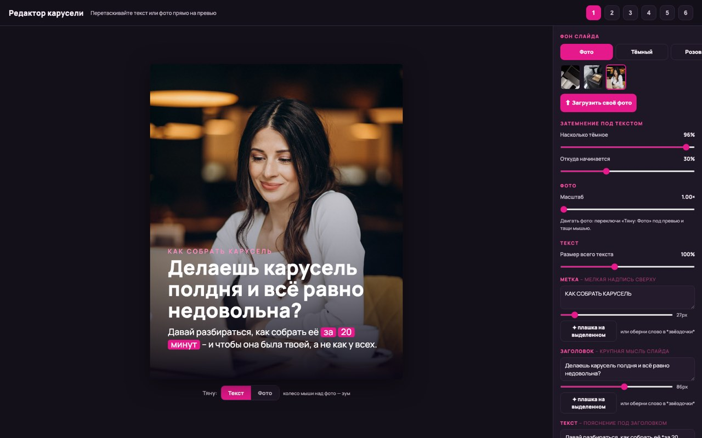
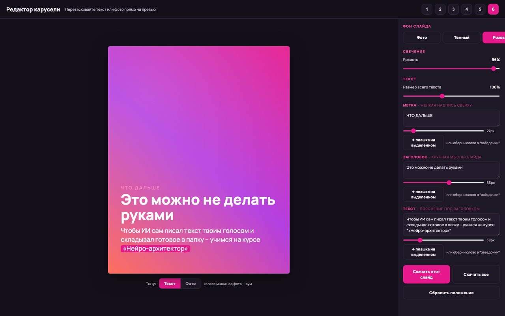

Главное
за минуту
Редактор каруселей – обычная веб-страница, 1 файл .html. Вы открываете её в браузере, пишете текст прямо на карточке, ставите своё фото и скачиваете готовые картинки.
Оформление редактор берёт из вашего паспорта стиля, а текст вы пишете с навыком «Мой голос». Так карусель получается вашей и по виду, и по интонации.
Собрать редактор можно 2 путями. Быстро – по 1 большому промпту. Основательно – с навыком, который ведёт по шагам и помнит все требования.
Редактор делается 1 раз. Потом вы только вставляете текст и фото, а всё новое просите у нейросети по 1 правке.
Шаг 1 · разобраться
Чем свой редактор в HTML удобнее картинки от нейросети
Нейросеть умеет писать текст на картинке, но часто делает это с ошибками: то лишний мягкий знак, то чужая буква. Исправить такую мелочь трудно. В ответ на просьбу поправить текст нейросеть перерисовывает картинку, меняет шрифты и уплотняет строки, и с каждой попыткой становится хуже.
В уроке 3 был другой путь: не носить картинку из чата в сторонний редактор, а попросить нейросеть собрать HTML-инструмент под вашу карусель. Главное его преимущество – текст редактируется прямо внутри, а скачиваете вы уже исправленный вариант. Букву, запятую или длинное тире вы правите руками за секунду, как в обычном документе. Фото, цвета и шрифты при этом ваши.
Живой пример: редактор каруселей FitStars
Так выглядит готовый редактор, собранный в стиле FitStars. Ваш будет в ваших цветах и с вашим набором кнопок, но устроен похоже: карточка в центре, настройки рядом.


Сделайте в нём 1 карточку. Напишите свой заголовок, загрузите своё фото, подвигайте ползунок затемнения и скачайте картинку. Так вы на деле почувствуете, что в таком редакторе вам удобно и чего не хватает. На шаге 3 это поможет решить, каким должен быть ваш.
Шаг 2 · приготовить
Что приготовить: 4 вещи, из которых редактор станет вашим
Без них нейросеть тоже соберёт редактор, только в цветах и шрифтах, которые выберет сама. Чтобы он получился вашим, соберите заранее:
Паспорт стиля
Ваши цвета, шрифты, настроение, подпись или логотип. Вы собирали его в уроке 3 модуля 3. Удобнее всего приложить паспорт файлом, но подойдёт и текст. Если отрабатывали стиль на карточках карусели, приложите и эти примеры. Паспорта пока нет – хватит 4 ответов: светлый или тёмный фон, 1–2 главных цвета, шрифт и подпись на карточке.
Навык «Мой голос»
Вы собрали его в уроке 2 модуля 2. Он понадобится на шаге 5, когда будете раскладывать пост по карточкам. Навыка нет – приготовьте 2–3 своих готовых поста, и нейросеть будет держаться их манеры.
2–3 своих фото
Те, что вы ставите в посты: портрет, рабочий кадр, деталь. На них вы проверите, читается ли текст поверх фото и хватает ли затемнения. Хорошо, если 1 фото светлое, а другое тёмное.
1 готовый текст поста
Настоящий, который вы собирались публиковать. На нём вы соберёте первую карусель и сразу увидите, чего редактору не хватает.
Сложите всё в 1 папку на компьютере, например «Редактор каруселей». Туда же потом ляжет сам файл редактора.
Шаг 3 · решить
Что должен уметь хороший редактор каруселей
Ниже 14 возможностей, которые превращают фирменный стиль в рабочий инструмент. Все они уже зашиты и в промпт, и в навык на шаге 4, так что перечислять их нейросети заново не нужно. Прочитайте список и отметьте для себя: без чего вам не обойтись, что лишнее и чего здесь нет, а вам нужно.
Текст правится прямо на карточке
Щёлкнули по заголовку и печатаете. Те же тексты видны в полях рядом, и оба места всегда совпадают.
Текст можно подвинуть
Блок текста перетаскивается мышью или пальцем, если он закрыл лицо на фото. Кнопка «Вернуть на место» возвращает его обратно.
Длинный заголовок не вылезает за край
Он сам уменьшается до разумного предела. Если всё равно не помещается, редактор подсказывает: сократите или разделите на 2 карточки.
Своё фото на каждой карточке
Загрузить с компьютера или телефона, заменить, убрать. Фото двигается внутри кадра и приближается ползунком.
Затемнение фото
Включается и выключается, а сила регулируется ползунком. Можно затемнить всё фото или только место под текстом.
Фоны без фото
2–4 цветных фона из вашей палитры, которые переключаются 1 нажатием. С ними удобно чередовать карточки: с фото, тёмная, цветная.
Фирменный стиль из паспорта
Ваши цвета и шрифты, подпись или логотип на каждой карточке. Подпись можно включить, выключить и поставить в нужный угол.
Список карточек
Все карточки по порядку. Добавить новую, сделать копию, удалить, поменять местами.
Вставить пост целиком
Поле, куда вы вставляете готовый текст. Блоки разделены пустой строкой: каждый блок становится карточкой, а его первая короткая строка – заголовком.
3 формата
Лента 4:5, квадрат и сторис. Формат переключается, и текст остаётся в кадре.
Скачать 1 карточку и все сразу
«Скачать эту карточку» отдаёт 1 картинку. «Скачать все» отдаёт всю карусель, с именами по порядку: 01, 02, 03.
Забрать текст вместе с картинками
Кнопка «Скопировать текст карусели» собирает текст всех карточек по порядку, чтобы вставить его в подпись поста. Тот же текст можно скачать файлом, и он идёт вместе с картинками, когда вы скачиваете всё.
Применить ко всем карточкам
Настроили фон, затемнение и положение текста на 1 карточке и перенесли на остальные 1 кнопкой.
Работа сохраняется сама
Закрыли вкладку, открыли снова – карточки на месте. Для новой карусели есть кнопка «Начать заново».
Шаг 4 · собрать
2 пути: быстро по промпту или основательно с навыком
Результат у обоих путей одинаковый: 1 файл .html с вашим редактором. Разница в том, как вы к нему придёте.
Быстро – промпт
Подходит, если хотите редактор уже сегодня и работаете в обычном чате. Копируете промпт, заполняете места в скобках, прикладываете паспорт стиля. К промпту
Основательно – навык
Подходит, если будете возвращаться к редактору, делать новые версии или собирать редакторы для заказчиков. Навык помнит все требования, сам проверяет файл перед выдачей и умеет раскладывать пост по карточкам вашим голосом. К навыку
Путь 1. Промпт «Собери мой редактор каруселей»
- Откройте новый чат в ChatGPT, Claude или Gemini.
- Нажмите кнопку прикрепления файла рядом с полем ввода – скрепку или «+» – и приложите паспорт стиля и 2–3 фото из шага 2.
- Нажмите «Скопировать» под промптом, вставьте его в чат и замените текст в [квадратных скобках] на свой.
- Отвечайте на вопросы нейросети по 1. Потом она перескажет ваш стиль и опишет будущий редактор – прочитайте и поправьте, если что-то не так.
- Напишите «да». Только после этого нейросеть соберёт файл.
- Скачайте файл и откройте его двойным щелчком – редактор откроется в браузере.
Промпт · собери мой редактор каруселей
Ты – разработчик простых инструментов для людей без технического образования. Собери мне редактор каруселей для соцсетей в моём фирменном стиле. Я не программист: объясняй всё простыми словами и не проси меня править код. О МНЕ И ЗАДАЧЕ Чем я занимаюсь и для кого пишу: [например, «психолог, пишу для взрослых о тревожности»] Как я делаю карусели сейчас: [где собираю и сколько уходит времени] Где публикую: [в каких соцсетях и мессенджерах] Форматы: [лента 4:5 / квадрат / сторис – оставьте нужные] Что обычно стоит на карточке: [например, «метка сверху, заголовок, 2–3 строки текста, подпись внизу»] Кто будет пользоваться: [я / ассистент / мои ученики], чаще с [компьютера / телефона] Мой стиль: прикладываю паспорт стиля [файлом / текстом ниже]. Цвета, шрифты, скругления, подпись и логотип бери только из него. Свои цвета и шрифты не подставляй. Если чего-то в паспорте не хватает – спроси меня. Фото для проверки: прикладываю [2–3] своих фото. КАК РАБОТАЕМ 1. Сначала разберись, как я работаю: задай 3–5 вопросов по 1 и жди ответа на каждый. Спроси, что мешает в нынешнем процессе, что обязательно должно быть на каждой карточке, что я хочу делать руками, а что – чтобы делалось само. 2. Перескажи мой стиль 3–4 строками: фон, цвет заголовка, цвет акцента, шрифты, подпись. Жди моего «да». 3. Опиши будущий редактор простыми словами: что на экране и что происходит по каждой кнопке. Собирай только после моего «да». 4. Собери редактор и пришли файл целиком. ЧТО ДОЛЖЕН УМЕТЬ РЕДАКТОР 1. Текст правится прямо на карточке: щёлкнул по заголовку – и печатаешь. Те же тексты видны в полях рядом, оба места всегда совпадают. На карточке 3 блока: метка, заголовок, текст. 2. Блок текста перетаскивается мышью и пальцем, не выходит за поля карточки. Есть кнопка «Вернуть на место». 3. Длинный заголовок сам уменьшается и не вылезает за край. Если всё равно не помещается – показывай подсказку «Слишком длинно – сократите или разделите на 2 карточки». Молча текст не обрезай. 4. Своё фото на каждой карточке: загрузить с устройства, заменить, убрать. Фото двигается внутри кадра и приближается ползунком. 5. Затемнение фото: включается и выключается, сила регулируется ползунком. 2 варианта – на всё фото или только под текстом. 6. Фоны без фото: [2–4] фона из моей палитры, переключаются 1 нажатием. 7. Фирменный стиль из паспорта: мои цвета и шрифты, моя подпись или логотип на каждой карточке. Подпись можно включить, выключить и поставить в нужный угол. 8. Список карточек с миниатюрами: добавить, сделать копию, удалить с подтверждением, поменять местами кнопками «выше» и «ниже». 9. Поле «Вставить пост целиком»: блоки разделены пустой строкой, каждый блок становится карточкой, первая короткая строка блока – заголовком. 10. Форматы: лента 4:5 (1080×1350), квадрат (1080×1080), сторис (1080×1920). При смене формата текст остаётся в кадре. 11. Скачивание: «Скачать эту карточку» – 1 картинка PNG; «Скачать все» – все карточки сразу, с именами 01, 02, 03. 12. Текст карточек: кнопка «Скопировать текст карусели» – текст всех карточек по порядку, чтобы вставить в подпись поста; кнопка «Скачать текст (.txt)». При скачивании всех карточек файл с текстом идёт вместе с картинками. 13. Кнопка «Применить ко всем карточкам»: фон, затемнение и положение текста с 1 карточки переносятся на остальные. 14. Работа сохраняется в браузере сама. Есть кнопка «Начать заново» с подтверждением. ТЕХНИЧЕСКИ – 1 файл .html, всё внутри файла: без внешних библиотек, установки и регистрации. Снаружи можно подключить только шрифты, и у каждого должен быть запасной системный. – Файл открывается двойным щелчком, работает с компьютера и с телефона. На ширине 375 пикселей: карточка сверху, настройки под ней, нет прокрутки вбок, перетаскивание работает пальцем. – Карточка собирается в полном размере формата, на экране показывается уменьшенной. Скачанная картинка совпадает с тем, что на экране: те же переносы, размер текста и положение фото. Перед скачиванием дождись загрузки шрифтов. – Цвета, шрифты и размеры вынеси в начало файла отдельным блоком с подписями на русском, чтобы стиль менялся в 1 месте. – «Скачать все»: собери архив .zip прямо в браузере и положи в него картинки и файл с текстом. Если без внешних библиотек так не получается – скачивай картинки по очереди и прямо скажи мне об этом. – Тексты и настройки сохраняй в браузере. Если фото не помещаются в память браузера – покажи подсказку, что после закрытия вкладки фото нужно загрузить заново. – Мои фото никуда не отправляются: всё остаётся в моём браузере. Напиши об этом 1 строкой в самом редакторе. – При первом открытии в редакторе стоит пример: 3 карточки с нейтральным текстом в моём стиле. В КОНЦЕ Перед выдачей проверь сам все 14 возможностей и честно назови, что проверить не смог. Пришли файл целиком и коротко скажи, как его открыть и с чего начать. После первой версии предложи 3 улучшения и жди, что я выберу. Дальше вноси правки по 1 и каждый раз присылай файл целиком.
Где запускать. В нейросети, которая умеет делать файлы: ChatGPT, Claude или Gemini. В ГигаЧате и Алисе код придёт текстом – скопируйте его в файл и сохраните как .html. Если вместо файла пришёл только кусок кода, напишите: «Пришли файл целиком, я не умею склеивать код».
Скачайте навык
Zip – папка redaktor-karuseley с файлом SKILL.md внутри: в таком виде навыки загружаются, как в модуле 2. Текстовая версия – тот же навык 1 файлом, чтобы вставить его в инструкцию проекта или в начало чата.
Посмотреть, что внутри
SKILL.md · redaktor-karuseley
--- name: redaktor-karuseley description: Помогает собрать свой редактор каруселей для соцсетей 1 HTML-файлом в фирменном стиле пользователя – с правкой текста прямо на карточке, перетаскиванием текста, своими фото, затемнением, списком карточек, форматами 4:5, квадрат и сторис и скачиванием картинок вместе с текстом. Ведёт по шагам: стиль, голос, требования, план, сборка, проверка, правки по 1. Умеет разложить готовый пост по карточкам голосом автора. Подключай, когда пользователь просит редактор или генератор каруселей, карточек или обложек, «карусель в моём стиле», «инструмент, чтобы самому собирать слайды», или приносит пост и просит сделать из него карусель. --- # Редактор каруселей в своём стиле и голосе ## Зачем этот навык Пользователь хочет сам собирать карусели для соцсетей: в своих цветах и шрифтах, со своими фото и своим текстом. Картинка от нейросети для этого неудобна: в ней нельзя поправить букву, запятую или тире. Поэтому ты собираешь ему редактор – 1 HTML-файл, который открывается в браузере. В нём текст правится прямо на карточке, фото меняются, а готовые карточки скачиваются картинками вместе с текстом. Пользователь не программист. Он не будет чинить код и склеивать куски, поэтому файл должен открываться и работать с первого раза. Объясняй простыми словами, без терминов. У навыка 2 режима: - **Собрать редактор** – разделы 1–7 и 9. - **Разложить пост по карточкам голосом автора** – раздел 8. Включай его, когда пользователь приносит текст и просит карусель, а редактор у него уже есть. ## Порядок работы ### 1. Что есть на входе Задавай вопросы по 1 и жди ответа на каждый, с вариантами ответа (а, б, в, «или своё»). Не больше 6. То, что уже понятно из запроса и приложенных файлов, не спрашивай – напиши, что ты понял. Что нужно выяснить: - Есть ли паспорт стиля: цвета, шрифты, настроение, подпись или логотип. Если есть – попроси прислать файлом или текстом. - Есть ли навык или описание голоса автора (например, навык «Мой голос»). Нужен для текстов карусели, не для самого редактора. - Где публикуются карусели и в каких форматах: лента 4:5, квадрат, сторис. - Что обычно стоит на карточке: метка сверху, заголовок, 2–3 строки текста, подпись, номер слайда. - Какие карточки нужны: с фото, на цветном фоне или и те, и другие. Попроси 2–3 фото, с которыми пользователь будет проверять редактор. - Кто будет пользоваться и с какого устройства: сам автор, ассистент, ученики; компьютер или телефон. Попроси 1 готовый пост – на нём вы проверите первую версию. Если пользователь торопится, работай по тому, что есть, а свои допущения перечисли 1 строкой. ### 2. Стиль – только из паспорта - Цвета, шрифты, скругления, настроение, подпись и логотип бери из паспорта стиля. Свои цвета и шрифты «по умолчанию» не подставляй. - Паспорта нет – спроси 4 вещи: светлый или тёмный фон, 1–2 главных цвета, шрифт (или «подбери сам и покажи 2 варианта»), подпись на карточке. Предложи потом оформить это как паспорт стиля. - Перескажи стиль 3–4 строками и получи «да» до сборки: фон, цвет заголовка, цвет акцента, шрифт заголовка и шрифт текста, подпись. - Если шрифт из паспорта нельзя подключить из открытой библиотеки шрифтов, скажи об этом и предложи ближайший по характеру. ### 3. Что умеет редактор Это обязательный набор. Пройди по списку вместе с пользователем и спроси, что добавить или убрать. 1. **Текст правится прямо на карточке.** Щёлкнул по заголовку – и печатаешь. Те же тексты видны в полях рядом, и оба места всегда совпадают. 2. **Текст можно подвинуть.** Блок текста перетаскивается мышью и пальцем, не выходит за поля карточки. Есть кнопка «Вернуть на место». 3. **Длинный текст не вылезает.** Заголовок сам уменьшается до разумного предела. Если всё равно не помещается, редактор показывает подсказку: «Слишком длинно – сократите или разделите на 2 карточки». Текст не обрезается молча. 4. **Своё фото на каждой карточке.** Загрузить с устройства, заменить, убрать. Фото двигается внутри кадра и приближается ползунком. 5. **Затемнение фото.** Включается и выключается, сила регулируется ползунком. 2 варианта: на всё фото или только под текстом. 6. **Фоны без фото.** 2–4 фона из палитры пользователя, переключаются 1 нажатием. 7. **Фирменный стиль.** Цвета и шрифты из паспорта стиля, подпись или логотип на каждой карточке: можно включить, выключить, выбрать угол. 8. **Список карточек.** Миниатюры по порядку. Добавить, сделать копию, удалить (с подтверждением), поменять местами кнопками «выше» и «ниже». 9. **Вставить пост целиком.** Поле, куда вставляют готовый текст: блоки разделены пустой строкой, каждый блок становится карточкой, первая короткая строка блока – заголовком. 10. **Форматы.** Лента 4:5 (1080×1350), квадрат (1080×1080), сторис (1080×1920). Формат переключается, текст остаётся в кадре. 11. **Скачать.** «Скачать эту карточку» – 1 картинка PNG. «Скачать все» – все карточки сразу, с именами по порядку: 01, 02, 03. 12. **Забрать текст.** «Скопировать текст карусели» – текст всех карточек по порядку, чтобы вставить в подпись поста. «Скачать текст (.txt)» – то же файлом. При скачивании всех карточек файл с текстом идёт вместе с картинками. 13. **Применить ко всем.** Стиль, затемнение и положение текста с 1 карточки переносятся на остальные 1 кнопкой. 14. **Работа сохраняется сама.** Закрыл вкладку, открыл снова – карточки на месте. Есть «Начать заново» с подтверждением. ### 4. План – до любого кода Опиши будущий редактор простыми словами: что на экране слева, справа и снизу, какие кнопки есть и что происходит по каждой. Назови, что вошло из списка, что пользователь попросил добавить и что ты предлагаешь отложить на вторую версию. Спроси: «Собираю так или что поправить?» Код не пиши, пока нет «да». ### 5. Сборка - 1 файл .html: разметка, стили и скрипты внутри. Без внешних библиотек, без установки и регистрации. Снаружи можно подключить только шрифты, и у каждого должен быть запасной системный. - Файл открывается двойным щелчком и работает без интернета (кроме загрузки шрифтов). - Карточка собирается в полном размере выбранного формата, а на экране показывается уменьшенной. Скачанная картинка совпадает с тем, что видно на экране: тот же перенос строк, тот же размер текста, то же положение фото. Перед скачиванием дождись загрузки шрифтов. - Цвета, шрифты и размеры вынеси в начало файла отдельным блоком с комментариями на русском: «цвет фона», «цвет заголовка», «шрифт заголовка». Так стиль меняется в 1 месте. - «Скачать все»: собери архив .zip прямо в браузере, без внешних библиотек, и положи в него картинки и файл с текстом. Если так не получается, скачивай картинки по очереди, а текст – отдельным файлом, и прямо скажи об этом пользователю. - Сохранение: тексты, порядок карточек и настройки – в памяти браузера. Фото большие и могут не поместиться. Тогда сохрани их отдельно в хранилище браузера для файлов или честно покажи подсказку: «Фото после закрытия вкладки нужно загрузить заново». - Фото никуда не отправляются: всё остаётся в браузере пользователя. Напиши об этом 1 строкой в самом редакторе. - Телефон, ширина 375 пикселей: карточка сверху, настройки под ней, нет прокрутки вбок, кнопки и ползунки нажимаются пальцем, перетаскивание работает пальцем и не прокручивает страницу. - Интерфейс на русском, подписи кнопок – глаголами: «Загрузить фото», «Скачать все». - При первом открытии в редакторе стоит пример: 3 карточки с нейтральным текстом в стиле пользователя, чтобы сразу было видно, как всё выглядит. ### 6. Самопроверка перед выдачей Пройди по списку и исправь, что не сходится: - все 14 возможностей из раздела 3 есть и работают; - текст на карточке и в поле рядом совпадает после правки в любом из мест; - длинный заголовок из 12–15 слов не вылезает и не обрезается; - фото загружается, меняется и убирается на каждой карточке отдельно; - затемнение включается, выключается и меняется ползунком; - скачанная карточка нужного размера и совпадает с экраном; - «Скачать все» отдаёт все карточки и текст; - после обновления страницы работа на месте; - на ширине 375 пикселей нет прокрутки вбок; - цвета и шрифты – из паспорта стиля, а не твои. Чего проверить не можешь – назови прямо и попроси пользователя проверить руками. ### 7. Выдача - Файл целиком: файлом для скачивания или 1 блоком кода. Имя латиницей через дефис, например `redaktor-karuseley.html`, а если редактор пойдёт на сайт – `index.html`. - Под файлом коротко: как открыть (двойной щелчок), с чего начать, как скачать карточки и текст. - Попроси собрать 1 настоящую карусель из готового поста от начала до скачивания и рассказать, где было неудобно. - 1 строкой: чтобы редактор открывался по ссылке с любого устройства, его выкладывают как обычную страницу – тем же путём, каким пользователь публикует свои страницы. - Предложи 3 улучшения на выбор и жди, что пользователь выберет. ### 8. Текст карусели голосом автора Когда пользователь приносит пост, заметки или наговор и просит карусель: - Если есть навык или описание голоса автора – пиши по нему: его слова, длина фраз, обращение к читателю, его запреты. Если нет – попроси 2–3 его готовых поста и держись их манеры. - 1 мысль – 1 карточка. Не влезает в 3 строки – это 2 мысли и 2 карточки. - На карточке заголовок и 2–3 строки текста. Заголовок – короткая строка, которую можно прочитать на 1 дыхании. - Первая карточка – крючок: обещание, что человек унесёт, если долистает. Не название темы. - Последняя карточка – что сделать дальше: написать, сохранить, попробовать. - Обычно 5–8 карточек. Если выходит больше 10 – предложи 2 карусели. - Смысл не меняй и ничего не добавляй от себя: ни примеров, ни цифр, ни историй. Чего в тексте нет – [уточнить: …]. - Выдай текст блоками через пустую строку: первая строка блока – заголовок, под ней – текст карточки. В таком виде его можно целиком вставить в редактор. Отдельно дай подпись к посту. - Покажи раскладку и спроси, что поправить. ### 9. Правки – по 1 за раз - Меняй только то, о чём просили, и называй, что изменил. - После каждой правки отдавай файл целиком, а не кусок кода: пользователь не должен ничего склеивать сам. - Если правка ломает то, что уже работало (скачивание, сохранение, вид на телефоне), скажи об этом до того, как её вносить. - Если пользователь просит сразу 5 изменений – предложи порядок и вноси по 1, проверяя после каждой. ## Правила - Не выдумывай стиль: цвета, шрифты и подпись – только из паспорта стиля или со слов пользователя. - Не выдумывай тексты за автора: в примере внутри редактора – нейтральные фразы, помеченные как пример. - Не обещай, что карусели «зацепят» или «принесут клиентов». Твоя зона – удобный инструмент и аккуратный вид. - Не добавляй вход, оплату, сбор контактов и отправку данных на сторонние сервисы. Если пользователь об этом просит – скажи, что это уже не 1 файл, а отдельная задача. - Чужие фото, логотипы и шрифты без прав не подставляй. Нужна картинка для примера – сделай цветной фон или простую заглушку. - Если твоя нейросеть не умеет отдавать файлы, отдай код 1 блоком и объясни, как сохранить его в файл с расширением .html. - Если пользователю нужен редактор для заказчика – сначала собери паспорт стиля заказчика и согласуй его, потом переходи к разделу 3.
Поставьте
Если в нейросети есть навыки. Как в модуле 2: в ChatGPT загрузите zip-архив целиком в разделе навыков – «Настроить» → «Плагины» → «Навыки» → «Создать» → «Загрузить с компьютера», – или прикрепите его в любой чат и напишите «Установи навык.». Вызвать навык можно через @. Если архив сам распаковался после скачивания, снова сожмите папку в zip.
Если навыков нет. Скачайте текстовую версию (.txt) и вставьте её в инструкцию проекта, Gem или Space – или приложите файлом к материалам помощника. Нет и проектов – вставьте текст первым сообщением в новый чат.
Сохраните к себе. Zip и txt положите в папку «Мои помощники». Если потом будете докручивать навык под себя, правьте этот файл, а не заводите «навык 2».
Claude и Codex: как подключить. В Claude: «Customize» → «Skills» → «+» → «Create skill» → «Upload a skill», затем выберите zip. Перед этим в «Settings» → «Capabilities» должно быть включено «Code execution and file creation». По справке Claude, свои навыки можно загружать на всех тарифах, включая бесплатный. В Codex: распакуйте zip и положите папку навыка в ~/.agents/skills/ (раньше Codex читал папку ~/.codex/skills/) или попросите сам Codex установить навык из этой папки. Если навык не появился – перезапустите Codex.
Названия пунктов – как в английском интерфейсе, в русском они могут звучать иначе. Сверено на 4 октября 2026 по справке Claude и документации Codex.
Напишите первый запрос
Приложите к сообщению паспорт стиля и 2–3 фото из шага 2.
Навык redaktor-karuseley · первый запрос
Используй навык redaktor-karuseley. Хочу собрать свой редактор каруселей. Прикладываю паспорт стиля [файлом / текстом ниже] и [2–3] фото для проверки. Публикую [в каких соцсетях и мессенджерах], форматы: [лента 4:5 / квадрат / сторис]. Пользоваться буду [я / я и ассистент / мои ученики], чаще с [компьютера / телефона]. Веди меня по шагам: вопросы, мой стиль, план редактора. Файл собирай только после моего «да».
Навык сначала покажет план редактора простыми словами. Перечитайте его и поправьте – только после этого он соберёт файл.
Шаг 5 · написать
Текст карусели в своём голосе: из поста – в карточки
Редактор отвечает за вид карусели, а за интонацию отвечает ваш навык «Мой голос». Соедините их: возьмите готовый пост из шага 2 и попросите нейросеть разложить его по карточкам вашим голосом. Правил у такого текста немного:
- 1 мысль – 1 карточка. Не влезает в 3 строки – значит, это 2 мысли, и им нужно 2 карточки. Проверка простая: прочитайте карточку вслух на 1 дыхании.
- Заголовок и 2–3 строки текста. Больше на карточке читать неудобно.
- Первая карточка – крючок. Обложка даёт обещание: что человек унесёт, если долистает. Название темы эту работу не делает.
- Последняя карточка – призыв. Скажите, что сделать дальше: написать, сохранить, попробовать. Без этого карусель просто заканчивается.
Промпт · пост по карточкам моим голосом
Используй мой навык «Мой голос». [Если навыка нет, напишите вместо этого: «Вот 2–3 моих поста, держись их манеры» – и приложите их.] Разложи этот пост по карточкам карусели: [вставьте пост] Правила: – 1 мысль – 1 карточка. Если мысль не помещается в 3 строки, раздели её на 2 карточки. – На каждой карточке заголовок 1 короткой строкой и 2–3 строки текста под ним. – Первая карточка – крючок: обещание, что человек получит, если долистает. Не название темы. – Последняя карточка – призыв: что сделать дальше [написать мне / сохранить / попробовать / перейти по ссылке]. – Всего [5–8] карточек. Если получается больше 10 – предложи разделить на 2 карусели. – Пиши моим голосом: мои слова, моя длина фраз, моё обращение к читателю [на «ты» / на «вы»]. Мои запреты: [например, без длинного тире]. – Смысл не меняй. Примеры, цифры и истории от себя не добавляй. Если в посте чего-то не хватает – пометь [уточнить: …]. Выдай текст так, чтобы его можно было вставить в редактор целиком: карточки разделены пустой строкой, первая строка карточки – заголовок, под ней – текст. Отдельно дай подпись к посту: [короткую / развёрнутую]. Потом спроси, что поправить.
Пример · первые 3 карточки из редактора FitStars
Делаешь карусель полдня и всё равно недовольна?
Давай разбираться, как собрать её за 20 минут – и чтобы она была твоей, а не как у всех.
Правило 1. Одна мысль на слайд
Самая частая ошибка – затолкать в первый слайд всё сразу. Не надо. Одна мысль – один экран. Не влезает в три строки? Значит, это две мысли, и им нужно два слайда. Проверка простая: прочитай слайд вслух на одном дыхании.
Правило 2. Первый обещает, последний зовёт
Обложка – это не название темы, а обещание: что человек унесёт, если долистает. А на последнем слайде скажи, что сделать дальше – написать, сохранить, попробовать. Без этого карусель просто заканчивается, и всё.
Так выглядит текст, готовый для редактора: блоки через пустую строку, первая строка блока – заголовок карточки. В примере автор говорит с читателем на «ты» – в вашей карусели будет ваше обращение и ваши слова. Полученный текст вставьте в поле «Вставить пост целиком», и редактор сам разложит его по карточкам.
Шаг 6 · доработать
Доработка: 8 готовых фраз для правок
Первая версия редко бывает идеальной, и это нормально. Соберите в редакторе карусель из своего поста и записывайте всё, что мешает. Потом несите правки нейросети по 1: так сразу видно, что изменилось, и легко вернуться назад, если стало хуже. Просите в том же чате, где собирали редактор. Если чат новый, приложите к сообщению файл редактора.
Вот 8 готовых фраз. Каждая уже заканчивается просьбой не трогать остальное и прислать файл целиком.
Затемнение только включается и выключается
Сделай затемнение фото ползунком от 0 до 100% и оставь выключатель. Остальное не трогай. Пришли файл целиком.
Текст закрывает лицо на фото
Текст закрывает лицо на фото. Добавь перетаскивание блока текста мышью и пальцем и кнопку «Вернуть на место». Остальное не трогай. Пришли файл целиком.
Длинный заголовок вылезает за край
Длинный заголовок вылезает за край карточки. Сделай так, чтобы он сам уменьшался, а если всё равно не помещается – показывай подсказку, что текст нужно сократить. Остальное не трогай. Пришли файл целиком.
Скачивать карточки по 1 долго
Добавь кнопку «Скачать все архивом»: в архиве картинки по порядку с именами 01, 02, 03 и файл с текстом карточек. Остальное не трогай. Пришли файл целиком.
Нужен текст карточек для подписи поста
Добавь кнопку «Скопировать текст карусели»: текст всех карточек по порядку, заголовок и текст каждой с новой строки. Остальное не трогай. Пришли файл целиком.
Каждую карточку приходится настраивать заново
Добавь кнопку «Применить ко всем карточкам»: фон, затемнение и положение текста с этой карточки переносятся на остальные. Остальное не трогай. Пришли файл целиком.
Хочется выделять важные слова
Добавь выделение слов цветной плашкой в моём акцентном цвете: выделяю слово в тексте, нажимаю кнопку – и под словом появляется плашка. Остальное не трогай. Пришли файл целиком.
Скачанная картинка отличается от экрана
Скачанная картинка отличается от того, что я вижу на экране: [что именно – переносы строк, размер текста, положение фото]. Найди причину и исправь, чтобы картинка совпадала с экраном. Остальное не трогай. Пришли файл целиком.
Перед каждой правкой сохраняйте копию рабочего файла. Если после правки что-то сломалось, приложите эту копию и напишите: «Вернись к этой версии и внеси правку иначе».
Шаг 7 · проверить и выложить
Проверьте редактор перед тем, как пользоваться
Проверка одна, зато настоящая: соберите в редакторе карусель из своего поста от начала до скачивания. По дороге пройдите по списку.
- Текст правится прямо на карточке, и исправленное попадает в скачанную картинку.
- Длинный заголовок не вылезает за край и не обрезается.
- Фото загружается и меняется на каждой карточке отдельно.
- Затемнение включается, выключается и регулируется ползунком.
- Текст можно подвинуть и вернуть на место.
- Цвета, шрифты и подпись ваши, из паспорта стиля, а не те, что нейросеть выбрала по умолчанию.
- Скачанные картинки нужного размера и чёткие на телефоне.
- «Скачать все» отдаёт все карточки по порядку вместе с текстом.
- После закрытия вкладки работа сохранилась.
- С телефона редактор не уезжает вбок, а кнопки нажимаются пальцем.
Что-то не сошлось – возвращайтесь на шаг 6 и просите по 1 правке.
Как открыть редактор по ссылке
Пока редактор – это файл на вашем компьютере. Чтобы открывать его с телефона или дать ассистенту, выложите его по ссылке тем же способом, каким вы публиковали страницу в уроке 4 модуля 3. Файл перед этим назовите index.html.
Если редактор собран по промпту или навыку с этой страницы, фото и тексты остаются в браузере того, кто их загрузил. По ссылке человек получает редактор в вашем стиле с карточками-примерами, а ваши карусели он не увидит.
Что сохранить и что дальше
Сохраните файл редактора, навык (zip и txt) и оба промпта в папку «Мои помощники». Первую карусель и ссылку на редактор добавьте в «Моё портфолио».
Редактор каруселей – 1 из 21 вида страниц-инструментов. Остальные 20, с примерами и промптами, собраны в гайде «Интерактивные материалы: 21 вид».
Карусели в стиле заказчика или редактор под его фирменный стиль – это услуга. Как на ней зарабатывать, читайте в гайде «Как навыки модуля 3 помогут вам зарабатывать».